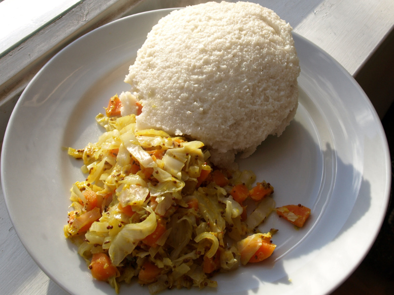

Ugali
The main staple food in Kenya.Taken mostly for dinner but the Kenyan commuity
does not mind it for breakfast

Ingredients
water
salt
white flour
steps
Bring the water and salt to a boil in a heavy-bottomed saucepan.
Stir in the cornmeal slowly, letting it fall though the fingers of your hand.
Reduce heat to medium-low and continue stirring regularly, smashing any lumps with a spoon, until the mush pulls away from the sides of the pot and becomes very thick, about 10 minutes.
Remove from heat and allow to cool somewhat.
Place the ugali into a large serving bowl. Wet your hands with water, form into a ball and serve.